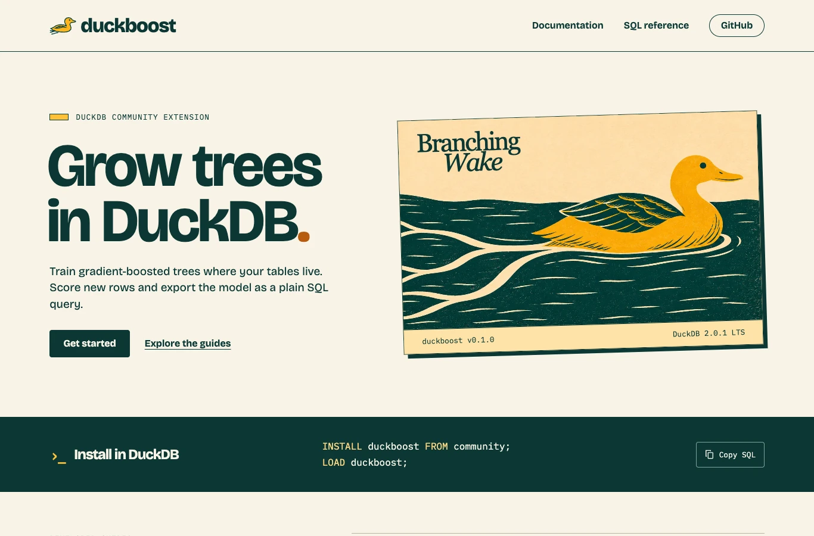
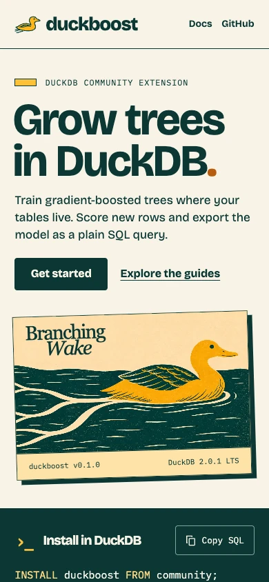
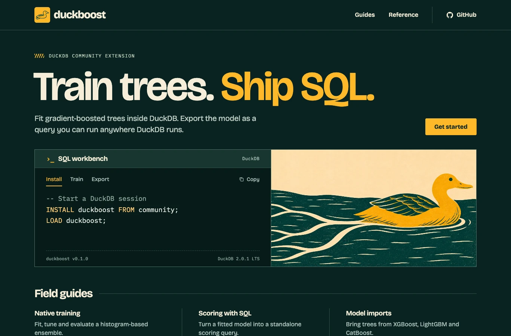
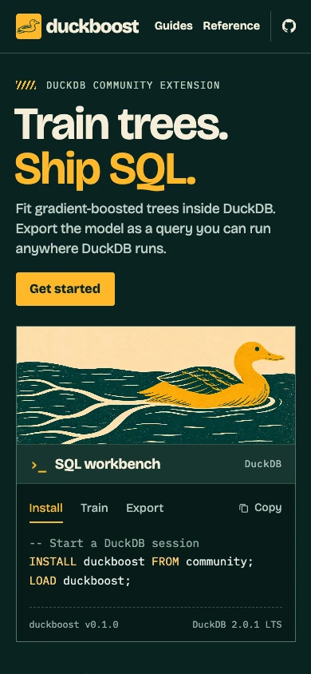
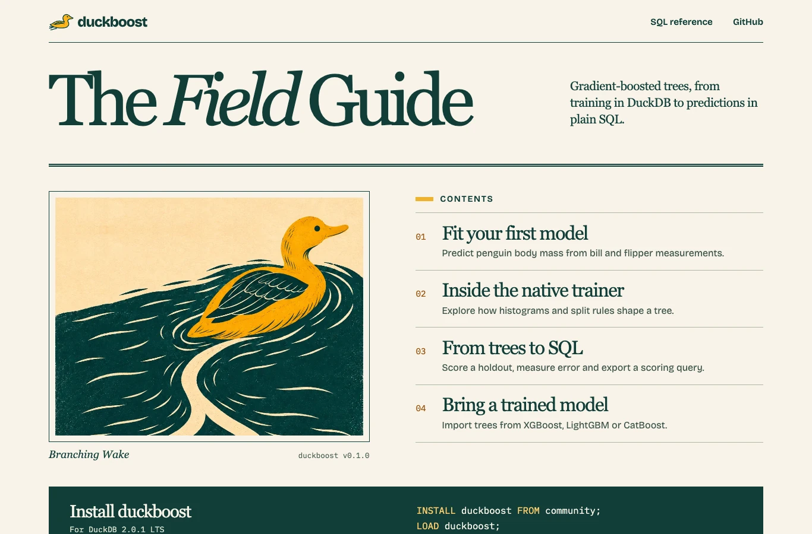
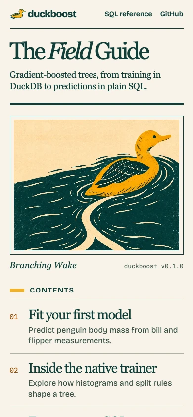
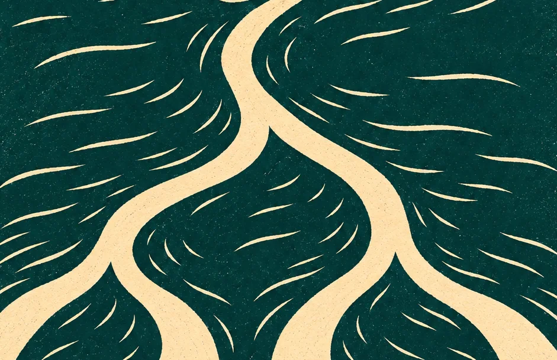

Homepage studies.
Three ways to bring Branching Wake to the duckboost documentation. Open a concept to explore the working page.


Branching Wake
A tilted screenprint, bold type, and the two SQL lines that get you started.
Open concept

Night Swim
A dark SQL workbench with installation, training, and export examples you can copy.
Open concept

Field Guide
The selected direction pairs the illustrated field guide with the tabbed SQL workbench.
Open selected designThe shared identity
Browser tab icon
Petrol, marigold, paper

Wake detail